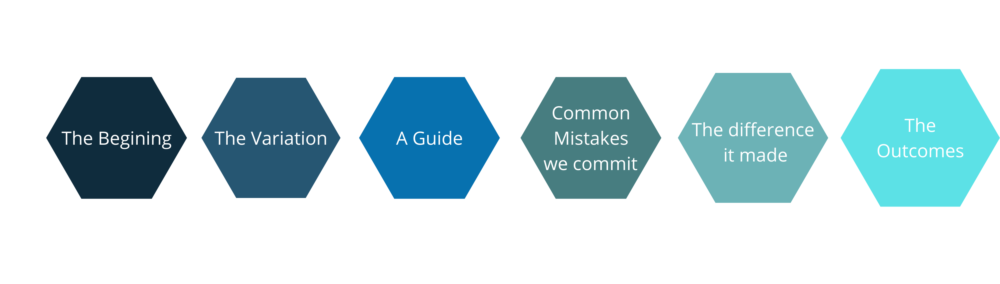

Coding attracts many, problems fascinate many.
Real-life problems from some of the biggest organizations, brains scorching with thoughts, keyboards ticking at a warp speed, coders from all backgrounds brainstorming on the same problem. A place where code can be sniffed in the air, the thrill of the solutions can be felt around. Yes, I am talking about Hackathons.
Hackathons, do you feel it something out of your range?
It is more true until you won’t get closer to it. It’s always best to know it before you step in. Let’s get into the depth of it, with insights into the real-life journey of Saumya G.
Introduction
Saumya G. is a pre-final year CS Undergrad student at VNIT Nagpur. He is the winner of Smart India Hackathon 2020 organized by MHRD. He along with the team won first place in SIH. Saumya has accomplished many challenging real-life projects, the details of the same can be seen in his Linkedin profile. He had also been selected for a 3-month explorer fellowship by Major League Hacking. Currently, he is exploring Natural Language Processing applications of Deep Learning.
What is a Hackathon?
A hackathon is a pool of innovative individuals coming together and pushing the limits of their own creativity, software development skills, and collaboration. In a hackathon, you (along with a team, mostly) work on a real-world problem and create a software-based (sometimes even hardware-based) solution prototype in a very limited period. Through the hackathon, you get to explore lots of completely new technologies in great detail within almost no time at all. You interact with other students who can inspire you with their creativity, in addition to getting a chance to talk with actual industry professionals who may be judging your prototypes and giving you invaluable advice on taking them to the next level. Any hackathon project might even be the beginning of something big that you go on to pursue either as a start-up or a well-maintained open-source project.
Are Hackathons “Coding competitions”?
Hackathons are as far from coding competitions as possible. Any and every domain that you require to make your prototype work is a domain involved in hackathons. This can range from making a completely consumer-facing project like a website or an app to making a developer tool like a CLI application or a library for some language/framework. Offline hackathons may involve learning hardware integrations into your project as well. Basically, anything goes as long you’re solving something or building something that was never there before.
Prerequisites to get started
I would say the bare minimum that would make it possible for you to participate in any hackathon is a creative desire to build something fun and a willingness to learn new things on the go. I believe these two things hold true for any project you are a part of, which is essentially what a hackathon is. If you have very little prior experience in creating any projects, the first couple of hackathons may be a struggle, but you will soon get the hang of it. Having a broad idea of the available open-source technologies would go a long way when you start thinking about how to implement an idea as the tech to be used would be clear to you. This can again only come once you start taking part in hackathons.
Know it before you step in
I guess the first thing that you should be clear about is your team. It’s best when you know your teammates well enough to understand the strengths of each teammate and the areas in which their contribution would be the most. Since every hackathon has a slightly different format or themes, it is very important to analyze what is exactly expected of you from each hackathon. For example, a corporate hackathon might require you to use a specific technology or you might find a particular theme that is aligned with your team’s interests. Keeping these expectations in mind, you can begin to ideate as many ideas as possible with the whole team, and depending on factors like innovativeness, ease of implementation, alignment with theme, etc., you can keep shortlisting until your group is satisfied with exactly one idea. The next step would be to explore the different implementation methods possible and narrow them down to what feels most feasible. After that, it’s all about good collaboration during the making of the prototype followed by a stellar presentation/demo as that is your only chance to express to the judges fully what your prototype is capable of and why it is so important.
Resources and platforms
Major League Hacking is the most widely acclaimed and popular platform that organizes hackathons. It is a student-run organization that holds hackathons very frequently with some amazing participants and sponsors.
Devpost is another very common resource/platform to explore crazy new ideas and find upcoming hackathons. Devpost is like a central repository for ideas and seeing how they have been implemented.
MY JOURNEY WITH HACKATHONS!

The Begining
I started participating in Hackathons after the end of my third semester when Smart India Hackathon 2020 was announced in Dec 2019. The shortlisting of ideas and the college rounds which made us eligible to apply for SIH were completed around the middle of February and we were finally accepted to attend the final round in March. The hackathon was going to happen in April, however, it kept getting delayed due to the pandemic and was eventually held in an online form in August 2020. After that, I have taken part in the Oxford Hack 2020 organized by Major League Hacking. This was a much shorter hackathon and had participants from over the world. After getting acquainted with Major League Hacking, I applied for their 3-month explorer fellowship where I took part in 3 “sprints”, each being a 3-week hackathon where teams of 3 compete with the other fellows.
The Variation
Smart India Hackathon is a particularly different hackathon than the more common ones. The salient feature about SIH is that the problem statements that teams would be working on would be actual problems faced by government ministries or PSUs or corporations. In many other hackathons, you might just be given a very broad theme under which everyone comes up with their own ideas and goes on to create the prototype. The format of SIH was also such that we could do a lot of work prior to the actual 3-day hackathon where we would tweak and improve our projects according to the recommendations of the judges. The final method of presentation may also differ across hackathons. For example, SIH had a zoom call each day where we would present our progress whereas other hackathons might have a video/dev post submission that the judges would use to compare projects.
A Guide
There were of course a lot of unknowns right at the beginning. However, almost everything at you that is required to know or learn would be available in some form or other directly on the internet. After we felt that we had sufficiently exhausted internet resources and were still confused, we reached out to our seniors who had taken part and won the hackathon one year before us, who were extremely helpful, despite the fact that they were taking part again, which meant we were a competing team. A very important aspect was to get continuous feedback on our solution/idea and how we were presenting it. For this, we received a lot of help from all directions in the college: professors, batchmates, and seniors. We were able to see how our idea/presentation was being perceived by experts in the subject as well as those who were new to the subject.
Common Mistakes we commit
This might not be a popular point of view but I feel that it is a mistake to give more importance to a specific part of the hackathon at the cost of another part of the hackathon. For example, if you try to rush the ideation phase or don’t discuss the tech stack and implementation clearly, it will only make the coding a lot more difficult. Another mistake in my opinion is to compromise on the presentation to get a few more lines of code in. It would be appreciated more if a team can clearly present the crux of their solution rather than making a haphazard presentation where it seems that a random set of features has been made into a project. Of course, the
coding is extremely important but small things like clear documentation and proper git workflows can be highly appreciated and show that you tried to go one step beyond everyone else.
The difference it made
The Variation
A hackathon becomes an experience that you would be able to talk about for as long as you want, irrespective of winning/losing. I remember a large part of my interview talking about the project we made in SIH and what I learned from it. I believe that it shows that you have a project/team-oriented mindset which is a big plus for any recruiter. I have not experienced it firsthand yet, but I believe that it must be easier to settle into the industry after taking part in multiple hackathons and doing projects as opposed to never taking part in such activities.
The Outcomes
Besides the technology, hackathons really help in enhancing interpersonal domains like collaborating in a team and communicating/presenting your ideas in a clear manner. There are a hundred different ways in which setbacks occur and you can really learn to stay calm under that sort of pressure and in fact even start enjoying that. It’s also a great way to expand the network of people you know and get exposure to what others are doing.
A pinch of Suggestions!
When I was a beginner, I was just someone who wanted to take part in something fun with my friends. We sort of just kept figuring things out as we went along and ended up having a great time. So my basic suggestion would be to just start taking part. The moment that happens, you realize what you are good at / need to improve at. You also understand what you enjoy making and what you find boring. And the first hackathon itself will give you a lot of confidence and you will just be waiting for taking part in the next one!